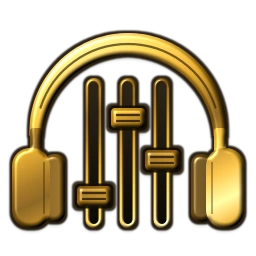

Song Rider Suite Manual
Everything the suite does, in one place: write chords, build beats, add lead, bass and vocals, arrange and mix, and write lyrics with chords. Use the contents below to jump to a section.
Getting started
What's in the suite
Chord Rider Pro
Write a chord progression line by line, hear it on 34 instruments, add a drum beat and export chord sheets.Scale Rider
Progression ideas by genre (Pop, Worship, Rap, Country, Rock and more) in your song's key, plus 31 scales. Tap one to drop it into your song. Open it with SCALE RIDER in Chord Rider Pro (more).Baby DAW
Add more parts to the same song: extra chord parts, lead and bass lines, and vocal recordings with effects and Auto-Tune.Track Master
See every part on a timeline: move, trim, split and copy clips, mix the tracks and record vocals from any point.Song Rider Pro
Write lyrics with chords, count syllables, find rhymes, dictate lyrics by voice and play along with AutoScroll.Switch between them with the three buttons under the banner, Chord Rider Baby DAW Song Rider, and the gold TRACK MASTER bar. Chord Rider Pro, Baby DAW and Track Master all work on the same song (a project). Song Rider Pro has its own songs, which you can link to a project (see Link SRP).
This manual is always one tap away: 📖 Manual in the top-right corner of the Song Rider Suite banner (a round 📖 on phones).
Install it like an app
- iPhone/iPad (Safari): Share → Add to Home Screen.
- Android (Chrome): ⋮ menu → Install app or Add to Home screen.
- Computer (Chrome/Edge): the install icon at the right of the address bar.
After one visit the suite also opens without an internet connection. A few things need the internet: signing in and syncing, voice-to-text, rhymes, and the first download of each instrument sound.
Your first song in two minutes
- In Chord Rider Pro, type chords in Enter chords, e.g. Em A7 Cmaj7 B7 (for example
C G Am F) and tap Build. - Tap ▶ Play to hear it. Tap Beat to add drums.
- Tap Save in the Projects panel and give the song a name. From then on it saves itself.
- Open Song Rider Pro, tap Link SRP, and write your lyrics under the chords.
Chord Rider Pro
Building a progression
- Type chords in the chord box and tap Build (or press Enter). Separate chords with spaces, commas or
|. - Build replaces the selected line with what's in the box. The box always shows the selected line, so tap a line first to edit it.
- ＋ Add blank line adds a new empty line at the end and selects it.
- Each line has ⧉ (duplicate, placed right below) and × (delete).
- Cards: tap a chord card to hear it, × on the card removes it.
- Move a card: on a computer, drag and drop it. On a phone, hold it for about half a second ("Card selected to move"), then tap another card (it goes before that card) or a line (it goes to the end of that line).
- Move a line: hold its "Line N" badge and drag it. On a computer you can drag it straight away.
- Keyboard: Tab to a card; Enter or Space plays it, Delete or Backspace removes it, ← → move between cards.
- On phones, lines become a swipeable row ("Line 2 / 5"). Swipe left and right to move between lines.
Chords it understands
- Roots A–G (lowercase is fine) with
#orb. Your spelling is kept, so Bb stays Bb. - Types: major (no suffix),
m,5,6,m6,7,maj7,m7,mMaj7,9,maj9,m9,add9,madd9,add11,madd11,sus2,sus4,7sus2,7sus4,dim,dim7,m7b5,aug,7b5,7#5,7b9,7#9,maj7#11. - Also accepted:
min,-(minor),M7,ø7,°/o,+. They're shown in the standard form (Cmin7 becomes Cm7). - Slash chords like
G/B,D/F#,Am7/Gplay the bass note underneath. - Anything it can't read is skipped and listed: "Skipped unrecognized: …".
EM AM7 BB becomes Em Am7 Bb. In such a line, M means minor, so spell major sevenths out as MAJ7. In a line with any lowercase letters, M7 keeps its usual meaning, major seventh.Instruments and sound
- Piano Guitar Misc each open a list of sounds. Nothing changes until you tap a sound; tap outside the list (or press Esc) to close it. The full list is in Sounds.
- Chord / Note: Note mode makes single-note cards (type notes like
E F# A B), and "Chords that fit" becomes "Notes that fit". - Octave − + moves the sound and the diagrams from −2 to +3 octaves.
- Sustain lets notes ring past their slot.
- Guitar only: Capo (none or 1–12), Chord Shape (Open / Easy, Triad, Barre Chord, Power Chord, Shell Voicing, Inversion, Color / Extended) and Capo mode:
- Transpose OFF: type the chord you want to hear, and the diagram shows the shape to finger ("Play D shape → sounds E").
- Transpose ON: type the shape you finger, and the card shows the chord that sounds.
- Piano cards show a keyboard with the notes highlighted; guitar cards show the six strings (× not played, ○ open).
Chords that fit and the Key box
- Type a key in Key (for example
F,F#m,BborC minor). If you leave it empty, the key is guessed from your first line. - The chips show the key's chords, their sevenths and some colour chords. Tap a chip to add it to the end of the selected line.
Playing
- ▶ Play / ■ Stop plays from the selected line (on phones, the line in view), with the drums and every Baby DAW part that's switched on.
- Repeat (on by default) loops the song; off, playback stops at the end.
- BPM sets the tempo (40–240). It takes effect when you press Enter or leave the box.
- Beats/chord (1, 2, 4 or 8) sets how long each card lasts, unless you've given a card its own length in MIDI View.
- ↕ auto scroll follows the playing card. Scrolling or tapping turns it off.
MIDI View
MIDI View turns each line into a note grid; the button then reads Diagram View to go back.
- Tap a cell to add or remove a note; tap the chord name to hear the chord.
- Drag a card's gold right edge to change its length (in quarter-beat steps).
- ⧉ repeats the card, ↺ returns it to its automatic notes, × removes it.
Projects and Archive
- New starts a new song; if the current one has unsaved work it asks Save this project?
- Save saves and names the song. After the first save it saves itself shortly after every change and when you leave the page. A song you never saved is kept as a draft and comes back after a reload.
- Rename renames the open song.
- The Projects list shows each song with Open, Rename, Archive and Delete (Delete asks first). Archive just moves a finished song out of the way into the Archive tab, where Restore brings it back.
- If saving fails (device full or offline), a "Not saved" banner with Retry appears until it succeeds.
Undo and Redo
↶ Undo / ↷ Redo keep 50 steps (Ctrl/⌘+Z, and Ctrl/⌘+Shift+Z or Ctrl+Y). They cover building, chips, Scale Rider, adding/duplicating/deleting/moving lines and cards, MIDI View edits, and Beat Maker's Randomize, Fill, Clear, Paste and Duplicate. They don't cover single drum-step taps or settings such as instrument, octave, capo, BPM and key. Opening a project or tapping New clears the history.
Scale Rider
Progression ideas by genre, in your song's key. Tap SCALE RIDER.
- Choose a genre: Classical, Country, Cultural, EDM, Metal, Pop, Rap, Rock or Worship. Then choose a style (Pop has Ballad, Contemporary and Dance; Worship has Gospel, Contemporary Worship, Black Gospel, Hymns and more).
- Each progression comes as Core, 7th color and Color versions. ▶ plays it, ☆ adds it to ★ Favorites.
- Tap a progression to use it. It fills the selected line if that line is empty, otherwise it adds a new line.
- With a Key set, progressions appear in that key. A major-style progression in a minor key uses the relative major, for example "C major (relative of A minor)".
- With no Key, all 12 keys are listed, and picking one also fills in the Key box.
- Scales lists 31 scales. Picking one shows its notes under the chips (tap them in Note mode), and it's saved with the song.
Beat Maker
Tap Beat (it reads "Beat (N bars)" once there's a pattern) to open 🥁 Beat Maker.
- Top row: Bars (1–16), Grid (1/8, 1/16, 1/32, 1/64) and Volume.
- The grid: one tab per bar and 19 drum rows (Kick 1–3, Snare 1–5, Closed Hat, Open Hat, High/Mid/Low Tom, Clap, Rim, Shaker, Tambourine, Cowbell, Conga). Tap a step to turn it on or off; ▶ beside a row plays that drum.
- 🎲 Beat Generator: pick a Style (Rock, Pop, Rap, Trap, Boom Bap, G-Funk) and Complexity (Simple, Medium, Busy). 🎲 Randomize Beat writes a new beat into every bar; 🥁 Fill Last Bar adds a fill to the last bar.
- Bottom row: ▶ Preview, Copy / Paste / Duplicate / Clear (each lets you pick bars and drums), ↶ Undo, and OK / Save Beat.
Back in Chord Rider, the Drums checkbox and Vol slider only change how loud the drums are (or switch them off); they never change the pattern.

Baby DAWBaby DAW adds parts to the song open in Chord Rider. The parts strip shows each part with a checkbox (include it in playback), its name (tap to edit it), ✎ rename and × delete. The slider under the strip sets the selected part's volume.
Adding parts
Add Part offers three kinds:
- Chord / Note: another full Chord Rider line editor (for example a second instrument playing the same or different chords).
- Lead / Bass: a note grid for melodies and bass lines.
- Vocals: for recording your voice (see Recording vocals).
Hide Setup (shown for chord parts) folds the instrument and chord controls to give you more room.
Under the volume slider, ▸ Effects (chord and lead/bass parts) opens the selected part's effects, and Song FX / Drums FX open the effects of the whole song and of the drums. See Music effects.
Writing a lead or bass line
- The grid shows one octave at a time. Choose it with Grid octave (1–6); notes in other octaves are kept.
- Resolution: 1/8, 1/16, 1/32 or 1/64. Bars: 1, 2, 4, 8, 16 or "Length of Song".
- Tap an empty cell to add a note (you'll hear it), tap a note to remove it, drag a note's right edge to make it longer.
- Move between bars with ‹ ›. Chords Used and Notes that fit show the bar's chords and good notes to use.
- Copy / Paste / Clear work on chosen bars; Paste can fill several bars at once or move a phrase to another octave.
- Choose the part's sound with Piano Guitar Misc. The Bass sound plays an octave below the written notes.
How the parts play together
- Every ▶ Play (Chord Rider, the lead grid and Track Master) plays all the parts that are switched on, plus the drums, in time.
- Repeat loops the whole song. Lead and bass parts also loop over their own length while it's on. A vocal part repeats only if you tick its own Repeat this part.
Notes
The Notes panel (one per project) has B I U • List 1. List and Clear (asks first). Notes can be included in PDF/PNG exports.
Recording vocals
- Wear headphones. The mic records exactly what it hears, including the backing from speakers.
- Add a Vocals part. Under 🎧 Backing while recording, tick the parts (and Drums) you want to hear and set the Playback level.
- Under 🎙 Mic, tap Mic check to see your input level.
- Tap Record. The backing starts straight away from the START marker (there's no count-in), and the take is placed at START. Tap ■ Stop to finish.
Takes
- Each recording is a take ("Take 1", "Take 2" …, newest first) with a badge: ☁ Cloud, Device, or ⚠ Not saved.
- Use puts a take in the song, ▶ previews it, ↓ WAV downloads it, × deletes it. Older takes stay in the list, so you can switch back.
- If recordings are on the device but not in any project, a banner offers Recover takes; Attach adds them to a vocal part.
Timing (latency)
- The app automatically shifts each take by the delay your device reports.
- If takes still land late or early, adjust Recording offset (ms) in the Mic panel: raise it if vocals are late, lower it if they're early. It applies to new recordings and is saved for this device.
- Bluetooth headphones add extra delay; wired headphones give the tightest timing.
- Recorded audio doesn't stretch with tempo, so set the BPM before you record.
Vocal effects and Auto-Tune
- EQ: Natural, Clear, Warm or Bright. Every setting also removes low rumble and breath pops.
- Compression: Off, Light, Medium or Heavy evens out loud and soft words. Each setting keeps the same overall volume, so you can compare them fairly.
- Reverb: Off, or a Small, Medium or Large room (each a real room sound with its own length).
- Delay: Off, Slap (one quick echo), or 1/8 and 1/4, which echo in time with the song's BPM and fade away.
- Auto-Tune: 0–100%. It tunes to the song's Key (or the key of your chords). With no key or chords yet, it tunes to the nearest note. A higher amount corrects further and faster; 100% gives the hard, stepped "Auto-Tune" sound. It's applied in playback and in WAV exports.
- Duck to kick: off for vocals. Turn it on if you want the vocal to "breathe" with the song's Pump too.
- Effects never change the original recording, so you can change them at any time.
When you're signed in and the project is saved, takes upload to your account and get a lyrics transcript automatically (Transcribe active take tries again). ▶ Play Mix plays the vocal part with its backing.
Track Master
Tap the gold TRACK MASTER bar to see the whole song on a timeline. Done closes it.
Tracks
- Chord and lead/bass tracks come first, then Drums, then vocal tracks. Hold a track name and drag to reorder.
- Each track has an on checkbox, a volume slider, M (mute) and S (solo).
- ⋮ (or right-click on a computer) offers: Edit This Track, Duplicate Track, Add Chord / Note Track, Add Lead / Bass Track, Add Vocal Track and Delete Track.
Editing
- Select: tap a clip or event.
- Move: drag it (on a phone, hold about half a second, then drag). You can drag chord/lead events to another chord/lead track, and vocal clips to another vocal track.
- Trim: drag either edge. Trimming a vocal clip never changes the recording itself.
- Add: double-tap an empty spot on a chord/lead track to add an event, then type a chord (
Bm7) or note (F#4). Double-tap an event to change it. On the Drums track, double-tap to add a 4-beat region; double-tap a region to edit it in Beat Maker. - Split cuts the selected vocal or drum clips at the playhead.
- Copy Cut Paste Delete: Paste starts at the playhead.
- Select (Range Select) picks a stretch of time on one track. Drag across it on a computer, or tap the start then the end on a phone. Adjust it with the blue handles; Copy, Cut and Delete then affect only that stretch.
- Multi Select: tap several events to select them together. All selects everything on the track.
- Snap to Beat with Grid (1/4 to 1/64) lines everything up to the beat; turn it off to place freely.
- Undo / Redo keep 50 Track Master steps. The history starts fresh each time Track Master opens.
Ruler, markers and transport
- Tap the ruler to move the playhead. Drag the START and FINISH markers to set what plays, loops and exports.
- |◀ to START, ◀◀ / ▶▶ move 4 beats, ▶| to the end, ■ stop, ▶ play from the playhead, Ⅱ pause, ● record into the selected vocal track.
- → AutoScroll follows the playhead (touching the timeline turns it off). ⠿ lets you drag the transport bar out of the way.
- Lyrics opens your lyrics in Song Rider Pro with small record buttons, so you can read while you record.
Track Effects
Show opens the effects panel for the selected track or clips. For a vocal track: volume (0–150%), EQ, Compression, Reverb, Delay, Auto-Tune and Duck to kick. Apply to chooses the whole track or just the selected clips; Reset Event FX to Track removes a clip's own settings.
For a chord, lead/bass or Drums track (tap its name, or one of its clips) the panel shows the music effects. Song FX in the toolbar opens the effects of the whole song.
Music effects
Effects for the music (not only the vocals), at three levels: a whole track (a chord/note part, a lead/bass part or the Drums), a single clip on a track (a chord, a lead note, a drum region), and the whole song. Each effect is a short list of presets with one or two sliders. Everything starts Off, so a song sounds exactly as before until you change something.
Where to find them
- Baby DAW: select a chord or lead/bass part and open ▸ Effects under its volume. Song FX and Drums FX are next to it.
- Track Master: tap a chord, lead/bass or Drums track's name (or one of its clips), then Show on the effects panel. Song FX is the last button of the toolbar.
Track and clip effects
| Control | What it does |
|---|---|
| EQ + Amount | Tone. Warm (fuller, softer top), Bright (more sparkle), Scoop (more lows and highs, fewer mids — the "smile"), Mid push (forward, cuts through), Thin (low cut, less boom), Dark (high cut, mellow), Telephone (a narrow, lo-fi band). Amount sets how strong: 0% = no change, 100% = the full preset. |
| Compression | Evens out loud and soft notes. Light, Medium, Heavy, and Punch, which lets the start of each hit through first (good on drums and plucked sounds). Every preset keeps about the same volume as Off, so you hear the difference in feel, not just "louder". |
| Drive + Amount | Saturation and distortion: Warm (gentle, tape-like), Crunch (edgy), Fuzz (thick and buzzy). Amount drives it harder. The volume stays about level as you turn it up. |
| Modulation + Amount + Speed | Chorus (wide shimmer), Phaser (sweeping swirl), Flanger (jet-plane sweep), Tremolo (volume pulses), Auto-pan (moves between the speakers). Amount is how deep, Speed how fast. |
| Pan | Places the track (or clip) from left (L) to right (R). The middle (C) is as before; the loudness stays the same anywhere. |
| Reverb send | How much of the track goes into the song's shared reverb (its room is set in Song FX). |
| Delay send | How much goes into the song's shared, tempo-synced delay (its timing and repeats are set in Song FX). |
| Duck to kick | Chord and lead/bass tracks: on by default. With the song's Pump on, each kick briefly ducks this track. (The Drums never duck.) |
| Bypass | Hear the track without its effects — and without its clips' effects — to compare. Pan and Duck to kick stay. Untick to hear the effects again; your settings are kept. |
Clip effects (Apply to)
- In Track Master, select one or more clips (a chord, a lead note or a drum region; Multi Select picks several) and set Apply to to Selected clip(s). Changes then go to those clips only.
- A clip with its own effects uses them instead of its track's effects (like vocal clip effects). It starts from a copy of the track's settings, so you only change what should differ. Its Duck to kick and Bypass follow the track. Clips with their own effects show a small FX tag.
- Apply to: Track edits the whole track of the selected clip. Reset Clip FX to Track removes the selected clips' own effects.
- A track name shows • FX when the track has effects (• FX off when bypassed).
Song FX
| Control | What it does |
|---|---|
| EQ + Amount | The same presets as a track's EQ, on the whole mix. |
| Glue | Gentle compression on the whole mix (Light, Medium, Heavy) that makes the parts sit together. It keeps the overall volume. |
| Pump | Off, Subtle, Medium or Heavy. Each kick briefly ducks the other tracks so the mix breathes in time with the beat — the "pumping" sound of house and EDM. Subtle dips about 3 dB, Medium 6 dB, Heavy 11 dB, and the level is back before the next beat (it follows the tempo). |
| Reverb room + Reverb level | The shared reverb every track's Reverb send goes to: Room (short), Plate (bright, smooth), Hall, Large Hall (longest). Reverb level is how loud the reverb comes back. |
| Delay time + Feedback | The shared echo every track's Delay send goes to, in time with the BPM: 1/8, dotted 1/8, 1/4 or 1/2 note. Feedback sets how many repeats you hear; each repeat is a little darker. |
| Width | Narrower (towards mono) or wider stereo for the whole mix. The middle is as recorded. |
Pump and Duck to kick
- Pump follows the kicks you can hear (Kick 1, 2 and 3 in the drum pattern or regions). With the Drums off, muted, or without kicks, nothing pumps; it also follows Mute and Solo.
- Every chord and lead/bass track ducks by default; turn a track's Duck to kick off to keep it steady. Vocals don't duck unless you turn their Duck to kick on.
- Previewing a pattern in Beat Maker never pumps the song.
Exporting
In the Projects panel, tap Export ▾:
| Item | What you get |
|---|---|
| PDF chord sheet | A printable chord sheet. Choose the parts, drums and project notes to include, then Create PDF. |
| PNG image | The same, as an image to share. |
| Audio mix (WAV)… | A finished stereo mix of the ticked parts and drums, from START to FINISH, with the same effects (vocal, track, clip and song effects, and the Pump) and loudness you hear. Rendering is fast and keeps going with the screen locked. |
| Studio package… | A ZIP for other music software: a MIDI file per part, the drums as MIDI, your dry vocal recordings and the project data. |
Song Rider Pro
Views
- Full Song View shows the whole song as song parts. Each part has a gold Section title, a Lyrics / chords box, and buttons to add (+) or delete (×) song parts, plus 🎤 dictation.
- Card pages: swipe left or right on the song to switch between Full Song View and one page per song part (on a computer, ← → when you're not typing). Each lyric line becomes a card with 8 chord boxes (two per beat), the lyric, 4 beat boxes and a syllable count.
- Card buttons: ⧉ copy chord row, 📋 paste chord row, ↻ repeat the previous card's chords, + add a card below, × delete the card. Edits in either view show up in the other.
- Hide folds the control panel (it then reads Show).
Writing chords with lyrics
All of these work in a lyrics box:
G D/F# Em7 Amazing grace how sweet the sound [G]Amazing [D]grace (inline brackets) Am | G | F (a chord-only line) 1Am 5Dm (a number forces the chord box, 1–8)
- A chord line above a lyric places each chord by its position over the words.
- On a card, typing
G D Eminto one chord box spreads them across the next boxes. Hold a chord box for about half a second to copy its row, then tap a box on another card to paste it. - In a chord box,
_strums the last chord again and...plays a single note of it. - A lyric line that starts with
_(for example_Chorus) starts a new song part.
Syllables, beats and the key
- Each line shows its syllable count: green 8–13, yellow 6–7 or 14–15, red 1–5 or 16+. Faint dividers split the line into 4 beats; put
/in a line to split the beats yourself, e.g.I was / made for / more than / this. - The key box works out the key from your chords (for example "A min").
- CAPO: tap it to switch between CAPO (0–12 semitones) and STEP (−2 to +3, two semitones per step). It changes the chord names on screen, the key, playback and export; your lyrics and the chords as written are kept.
Playing and AutoScroll
- ▶ plays the chords at the song's BPM (8 boxes = 8 eighth notes per bar). On a card page it plays the card in view; in Full Song View it plays along with AutoScroll. For a linked song it plays the whole Chord Rider / Baby DAW arrangement.
- ↕ AutoScroll turns Full Song View into a play-along screen: each lyric line becomes 4 beat boxes, one lights up per beat, and it moves on every 4 beats, looping at the end. Tap it again to pause and resume; ■ goes back to editing. The speed is set by BPM.
Voice to text (🎤)
- Sign in (☁︎) and be online. Pick a style from the menu next to 🎤 (Hip-hop/Rap, Worship/Gospel, Country, Pop/Rock, R&B or General); it helps spell lyrics in that genre.
- Tap 🎤. The voice meter shows "Getting the microphone ready", then "Listening ▮▮▯▯▯ go ahead."
- Speak. Your words appear after each short pause. Say "new bar" or "next bar" to leave a blank line between bars.
- Tap ⏹ to stop. Whatever was already said is still written in.
- It stops by itself if you lock the screen, switch apps or change view. Nothing is lost; if the song was closed, the text appears in a notice so you can paste it.
- If transcription fails, "Your audio is kept" appears with Download recording and Retry transcription.
Rhymes (the round R button)
Tap R (bottom right) for rhymes on the last word of the previous bar (or the previous card): Perfect Rhymes and Near Rhymes (yellow). Tap a word to insert it where your cursor is. Hide closes the list. Rhymes need the internet.
Link SRP
- Link SRP connects this song to a Chord Rider / Baby DAW project. If the project open in Chord Rider is free it links straight away; otherwise you choose one from a list.
- The project's chords go onto your lyric lines in order, through the whole song: Chord Rider's line 1 on the first lyric line of the first section, line 2 on the next lyric line, and on into Chorus 1, Verse 2 and every section after. Write one Chord Rider line for each lyric line, top to bottom, and the chords land where they belong. Your lyrics are kept. ↶ Undo removes the imported chords.
- Chord Rider lines past your last lyric line go on new cards after it; lyric lines past Chord Rider's last line keep the chords they have. A blank line in Chord Rider leaves its lyric line without chords.
- The song takes the project's BPM, capo and key, and they stay in sync from then on. When the chords change in Chord Rider, the song's chord boxes are updated to match.
- The button then reads Unlink SRP; tap it to unlink (lyrics and chords stay).
Notes, files and export
- 📝 Project Notes: a page of notes per song with text styles, lists, a checklist and photos (drag, resize, crop).
- ⬆️ Upload audio or PDF:
- A PDF or .txt replaces the song's lyrics (it asks first if there are lyrics, and Undo reverses it). Scanned PDFs without text can't be read.
- Audio files (mp3, wav, m4a, aac, ogg) are attached to the song, each with rename, play/pause, stop, download and delete.
- ⬇️ Export downloads a printable, coloured page of the song (chords in red over the lyrics, with BPM, capo and key) to open, print or save as PDF.
- 📁 Completed Projects Archive: ＋ adds songs from your projects; tap an archived song to open it, or hold it to move it back to Projects.
Songs, saving and undo
- The song picker (New Song ▾) lists your songs (Recent or A–Z). ＋ new, ✏️ rename, Ⓧ delete (asks first).
- Everything saves automatically as you type; 💾 saves straight away.
- ↶ ↷ undo and redo up to 80 song edits (lyrics, chords, titles, parts, imports, linking).
- Pasting text when no box is selected imports it like a .txt file.
Sounds
Pick a sound with Piano Guitar Misc in Chord Rider or on any Baby DAW part.
| Tab | Sounds |
|---|---|
| Piano | Piano, Bright Grand, Electric Grand, Electric Piano, Vintage E-Piano, Synth, Warm Synth Pad, Poly Synth, Saw Synth, Bass |
| Guitar | Acoustic, Acoustic Nylon, Electric, Jazz Electric, Muted Electric, Crunch Electric, Drive Electric, Wah Wah Electric, Bass |
| Misc | Sax, Alto Sax, Horn, Brass Section, Trumpet, Trombone, Tuba, Flute, Clavinet, Funky Worm, Funk Organ, Vibraphone, Marimba, G-Funk Whistle, Synth Brass |
- Most instruments are real recordings; the synths, organ, clavinet, worm and whistle are made by the app. Every sound plays at the same loudness, so switching sounds doesn't jump in volume. Funky Worm and G-Funk Whistle sit a little above the rest as lead sounds, and the whistle plays an octave above the written note, like a real whistle.
- The first time you use a sound it downloads (up to about 2 MB); after that it's stored on the device and works offline.
- Who recorded the instruments: Sound credits (also linked at the bottom of every sound list).
Account, saving and sync
- Sign in in the ☁ Cloud Account panel (Chord Rider and Baby DAW) or with ☁︎ in Song Rider Pro.
- New account: Create account needs your email, a password (8+ characters) and the private invite code from whoever shared the app with you.
- What syncs: your songs, beats, Baby DAW parts, notes, vocal recordings, Song Rider lyrics and attachments, and your chosen look, across all your devices. Syncing happens by itself; ↻ Sync Now does it straight away.
- Offline: everything keeps working on the device and uploads when you're back online.
- "(conflict copy …)": if the same song was changed on two devices before they synced, both versions are kept, and yours becomes "Song (conflict copy …)". Nothing is lost; delete the copy you don't want.
- Log out uploads first, and your songs stay on the device. Change password is in the same panel.
- Look: ⚙ in the Cloud Account panel opens Appearance with 15 skins (Rider Original, Black Label, Sapphire Paisley, Royal Wave, Candy Pop, light versions and more). A skin only changes the look.
Tips and troubleshooting
No sound
- Turn the volume up and, on an iPhone, turn off the silent switch.
- Tap a chord card once; browsers only start sound after a tap.
- A sound you haven't used before needs the internet the first time.
Sound crackles on the phone speaker
A phone speaker at full volume can strain on loud passages. Try headphones, a car or a Bluetooth speaker, or turn the phone down a little.
The microphone doesn't work
- If the mic is blocked, tap the icon left of the web address → Permissions (or Site settings) → Microphone → Allow, then try again.
- Close other apps that might be using the mic.
- Voice to text also needs you to be signed in and online.
A chord isn't recognised
Check the spelling against Chords it understands. Chords such as C11, C13 and C6/9 aren't supported yet; try C9 or Cadd9.
Vocals are out of time
Use wired headphones, adjust Recording offset (ms) (see Timing), and set the BPM before recording.
The app looks out of date
Reload the page twice. If it still looks old, open Force refresh: it clears the stored app files and reloads, and your songs are kept.
A song I deleted came back, or there's a copy
A "(conflict copy …)" means two devices changed the song; keep the one you want. Deleting a song on one device removes it everywhere after sync.